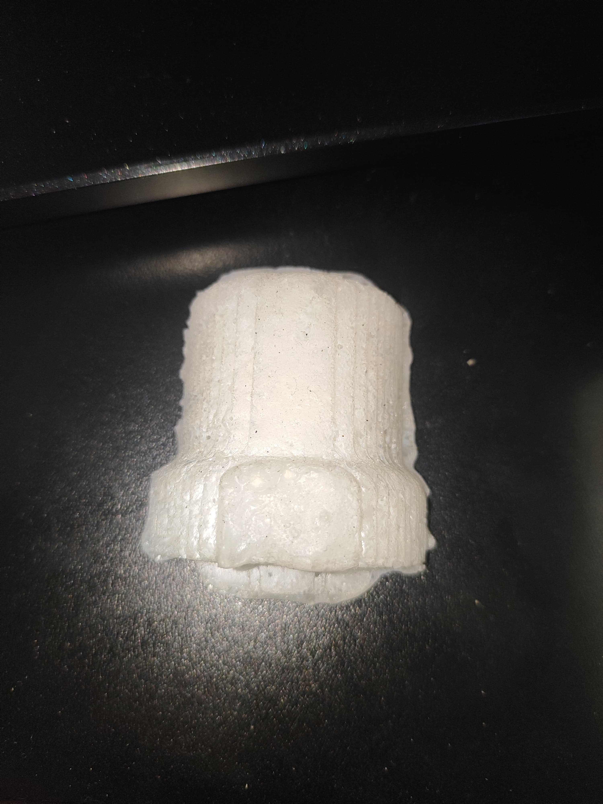

En estas clases, nos enseñaron a como hacer un molde. Desde un molde de cera, para crear uno de silicon y finalmente hacer uno de resina.
- Introducción -
Los moldes son herramientas esenciales para reproducir objetos con precisión. Los de cera se usan en la fundición a la cera perdida, ideales para trabajos detallados pero temporales. Los moldes de silicón son flexibles, reutilizables y capturan detalles finos, perfectos para diversas aplicaciones como arte, cocina e industria. Por su parte, los de resina son rígidos y duraderos, adecuados para producciones en masa, aunque menos flexibles que los de silicón.
La elección del material depende del proyecto y el resultado deseado.
- Desarrollo -
Molde de cera
Para hacer el molde de cera ocupamos un bloque de cera, donde primero, pusimos nuestro diseño en un software donde modificamos su tamaño. Creamos un desvaste y un detallado de la figura y en una maquina configuramos su pocisión en donde iba a empezar el proceso. Se utilizaron brocas diferentes entre el desbaste y el acabado.
Molde de silicon
Despues de ya haber obtenido nuestro molde de cera, crearemos una mezcla para poder hacer el silicon. Para esto primero llenaremos el molde de cera con agua y esta la pasamos a un vaso. Una vez tenemos el agua en el vaso, marcaremos hasta donde llega con un plumo y tiraremos el agua. Despues, llenaremos con silicon hasta donde marcamos y esto lo pondremos en una bascula, dependiendo del resultado añadiremos 1 gramo de catalizador por cada 10 de silicon y despues lo revolveremos lo mas rapido antes de que este se endurezca.
Molde de resina
Una vez teniamos el molde de silicon, hicimos un proceso parecido al molde de cera, primero lo llenaremos de agua hasta el limite y esa agua la pondremos en un vaso. Despues marcaremos hasta donde llega el agua en el vaso y lo llenaremos con resina hasta la marca. Una vez teniendo la resina lo pesaremos en la bascula y ahora haremos una proporcion de 1 a 1, por cada gramo de resina es un gramo de catalizador.
En el primer intento, no distribuimos bien la mezcla en el molde, haciendo que se crearan burbujas que afectaron la estructura del molde.

En el segundo intento ya distribuimos bien la mezcla, saliendo un mejor molde de resina.